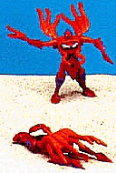

Claw
Jaw
Claw
Jaw

Allegiance
: Maximal
Size
: Basic
Difficulty of Transformation
: Easy
Color Scheme
: Orange, Light Ruby
Red, with spots of lavender and some yellow
Rating
: 5.4
In Beast Mode, a pink
squid. A squid isnt the best character for a transformer, but from
the front at least, this squid looks okay. The robot head and arms are
kind of obvious, though.
In robot mode, his squid
crest becomes his feet, and his tentacles swing back. I think this mode
is a little weak. His tentacles are too weird looking in this mode, since
he has no hands to speak of. You press a lever on his back, and the two
claws come out of his chest, kind of like a power sucker.
A neat action feature,
but otherwise, only a so-so transformer.
Claw Jaw Bio
:
FUNCTION: Underwater Attack
From the deepest, coldest depths of
the sea, Claw Jaw emerges to attack Predacon enemies that stray too close
to his underwater lair. By wrapping his eight powerful arms around them
in a constrictive vice grip, Claw Jaw drains his victim's powers by extracting
Energon from their bodies through his suction-cup arms. The four razor-sharp
fangs surrounding this cyber squid's mouth make him a potent warrior, as
does his robotic metal-slashing claw weapon.
Strength: 6.0
Intelligence: 4.0
Speed: 8.0
Endurance:4.0
Rank: 4.0
Courage: 7.0
Firepower: 5.0
Skill: 6.0
Review by Beastbot
Back to Beast
Wars Toys Index